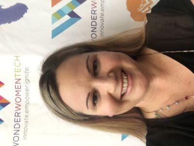

Melissa Papp
About Me
I am extremely curious about the world around me. I love to figure out how things work and nothing is off limits. When I served in the U.S. Coast Guard, I was able to use technology to navigate the seas and experience the freedom of sailing the world’s oceans.
Using math and science to as a tool to experience life and discover new things is extremely empowering skill for anyone and can be taught to all people from all backgrounds. As an educator, I love to motivate all people and help them accomplish their goals. As a web developer, I aim to design a fun user experience and content that enables you to learn and express yourself.